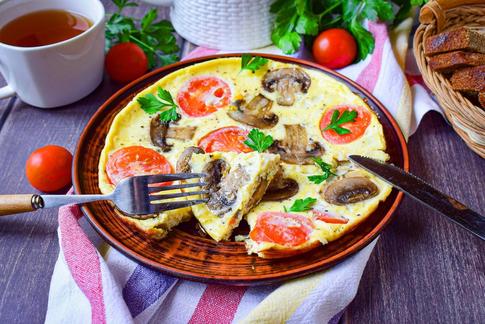
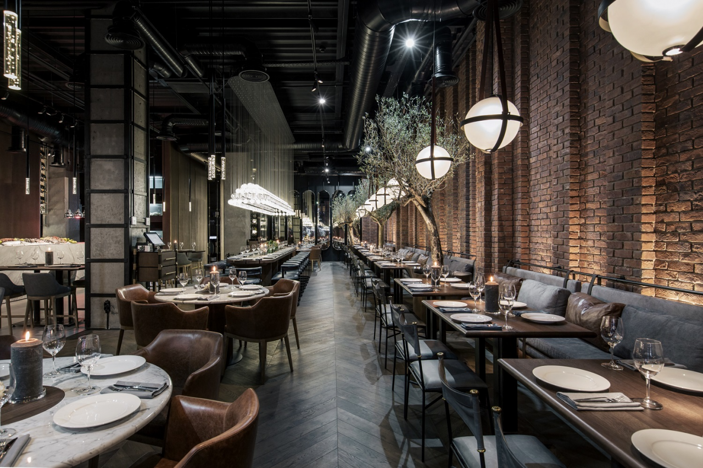
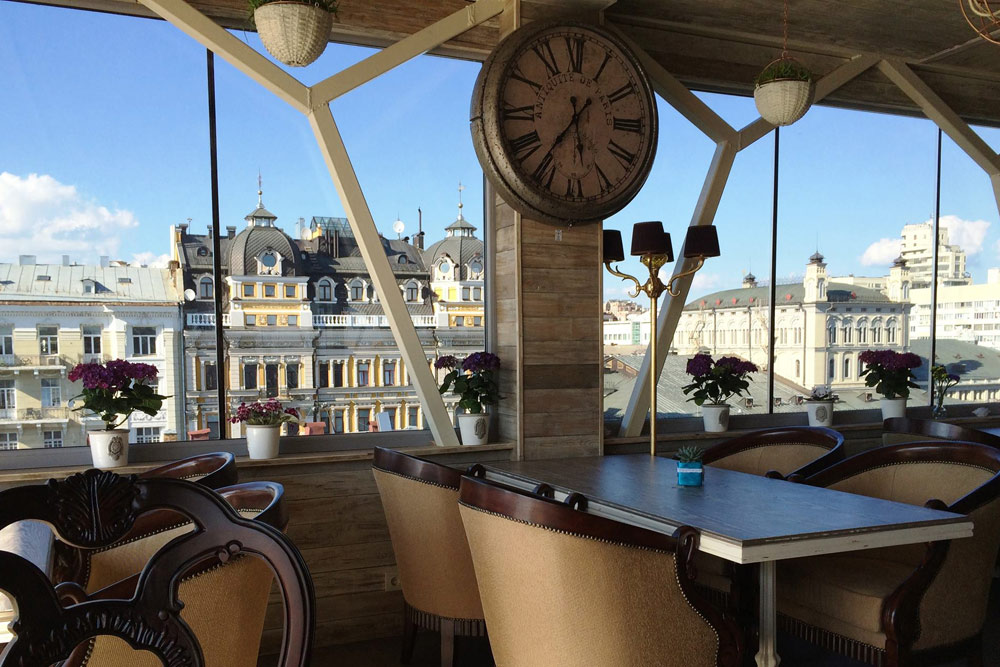

<!doctype html>
<html lang="en">

<head>
    <meta charset="utf-8">
    <meta name="viewport" content="width=device-width, initial-scale=1">
    <title>Ресторан LERO</title>
    <link rel="stylesheet" href="style.css">
    <link href="https://maxcdn.bootstrapcdn.com/bootstrap/4.5.2/css/bootstrap.min.css" rel="stylesheet">
    <link href="https://cdn.jsdelivr.net/npm/bootstrap@5.3.3/dist/css/bootstrap.min.css" rel="stylesheet"
        integrity="sha384-QWTKZyjpPEjISv5WaRU9OFeRpok6YctnYmDr5pNlyT2bRjXh0JMhjY6hW+ALEwIH" crossorigin="anonymous">
</head>

<body>
    <script src="https://cdn.jsdelivr.net/npm/bootstrap@5.3.3/dist/js/bootstrap.bundle.min.js"
        integrity="sha384-YvpcrYf0tY3lHB60NNkmXc5s9fDVZLESaAA55NDzOxhy9GkcIdslK1eN7N6jIeHz"
        crossorigin="anonymous"></script>
</body>

</html>

<!-- Навігаційна панель -->
<nav class="navbar navbar-expand-lg navbar-dark bg-dark">
    <a class="navbar-brand" href="#">LERO</a>
    <button class="navbar-toggler" type="button" data-toggle="collapse" data-target="#navbarNav"
        aria-controls="navbarNav" aria-expanded="false" aria-label="Toggle navigation">
        <span class="navbar-toggler-icon"></span>
    </button>
    <div class="collapse navbar-collapse" id="navbarNav">
        <ul class="navbar-nav ml-auto">
            <li class="nav-item">
                <a class="nav-link" href="#about">Про нас</a>
            </li>
            <li class="nav-item">
                <a class="nav-link" href="#menu">Меню</a>
            </li>
            <li class="nav-item">
                <a class="nav-link" href="#gallery">Галерея</a>
            </li>
            <li class="nav-item">
                <a class="nav-link" href="#contact">Контакти</a>
            </li>
        </ul>
    </div>
</nav>

<!-- Банер -->
<div class="jumbotron jumbotron-fluid text-center"
    style="background: url('path/to/banner.jpg') no-repeat center center; background-size: cover;">
    <div class="container">
        <h1 class="display-4 text-black">Ласкаво просимо до LERO</h1>
        <p class="lead text-black">Найкращі страви в місті!</p>
    </div>
</div>

<!-- Про нас -->
<section id="about" class="py-5">
    <div class="container">
        <h2 class="text-center">Про нас</h2>
        <p class="text">Lero: Перлина Гастрономії
<br>
            Леро - це не просто ресторан. Це місце, де кожен шматочок їжі - це миттєвість вишуканого смаку та вишуканого стилю. У нашому головному ресторані Lero ви зустрінете неперевершену симфонію смаків, яка розкаже вам історію кожного страви та підкорить ваші смакові рецептори. Наша команда талановитих шеф-кухарів створює гастрономічні шедеври з найкращих інгредієнтів, а стильний інтер'єр робить кожен обід або вечерю незабутнім подією. Ласкаво просимо до Lero - місця, де кожен ковток - це справжнє задоволення для душі та смаку.</p>
    </div>
</section>


<!-- Меню -->
<section id="menu" class="py-5 bg-light">
    <div class="container">
        <h2 class="text-center">Меню</h2>
        <div class="row">
            <div class="card" style="width: 18rem;">
                
                <div class="card-body">
                    <h5 class="card-title">Сніданок</h5>
                    <p class="card-text">омлет з грибами 100 грн.</p>
                    <a href="#" class="btn btn-primary">Перейти</a>
                </div>
            </div>
            <div class="card" style="width: 18rem;">
                
                <div class="card-body">
                    <h5 class="card-title">Обід</h5>
                    <p class="card-text">борщ український 80 грн.</p>
                    <a href="#" class="btn btn-primary">Перейти</a>
                </div>
            </div>
            <div class="card" style="width: 18rem;">
                
                <div class="card-body">
                    <h5 class="card-title">вечеря</h5>
                    <p class="card-text">салат цезар 130 грн.</p>
                    <a href="#" class="btn btn-primary">Перейти</a>
                </div>
            </div>
        </div>
</section>

<!-- Галерея -->
<section id="gallery" class="py-5">
    <div class="container">
        <h2 class="text-center">Галерея</h2>
        <div class="card-group">
            <div class="card">
                
                <div class="card-body">
                    <h5 class="card-title">Lero's Bistro</h5>
                    <p class="card-text">Ласкаво просимо до Lero's Bistro – місця, де традиції зустрічаються з
                        сучасністю, а смак стає мистецтвом. Наш бістро пропонує затишну атмосферу та ретельно підібране
                        меню, натхнене європейською кухнею. В Lero's Bistro кожна страва готується з любов'ю та
                        пристрастю до кулінарії, використовуючи лише свіжі та якісні інгредієнти. Тут ви знайдете
                        ідеальне поєднання класичних рецептів та сучасних кулінарних трендів. Завітайте до нас, щоб
                        насолодитися незабутніми смаками та відчути справжню гостинність у серці нашого міста.</p>
                    <p class="card-text"><small class="text-body-secondary">Last updated 23 hours ago</small></p>
                </div>
            </div>
            <div class="card">
                
                <div class="card-body">
                    <h5 class="card-title">Lero Tastes</h5>
                    <p class="card-text">Ласкаво просимо до Lero Tastes – місця, де кожен шматок – це справжній витвір
                        мистецтва. У нашому закладі ми пропонуємо вам відчути справжній екстаз смаку, де кожен куштун
                        дарує вам нові враження та емоції. Наша кухня – це місце, де зустрічаються традиційні рецепти та
                        сучасні гастрономічні тренди, створюючи гармонійне поєднання смаків та текстур. В Lero Tastes ми
                        прагнемо до ідеального поєднання смаків, кожен з яких створений для вашого задоволення.
                        Приєднуйтесь до нас та дозвольте собі насолодитися найсмачнішими подарунками природи в кожному
                        ковтку!</p>
                    <p class="card-text"><small class="text-body-secondary">Last updated 1 month ago</small></p>
                </div>
            </div>
            <div class="card">
                
                <div class="card-body">
                    <h5 class="card-title">Lero Delights</h5>
                    <p class="card-text">Ласкаво просимо до Lero Delights, де кожен візит стає гастрономічною подорожжю!
                        Наш ресторан пропонує вишукані страви, приготовані з найсвіжіших інгредієнтів та натхненні
                        найкращими кулінарними традиціями світу. У затишній атмосфері Lero Delights ви зможете
                        насолодитися унікальними поєднаннями смаків, що задовольнять навіть найвибагливіших гурманів.
                        Кожна страва в нашому меню – це справжнє задоволення для ваших смакових рецепторів. Приходьте до
                        нас, щоб відкрити для себе нові гастрономічні враження!</p>
                    <p class="card-text"><small class="text-body-secondary">Last updated 6 months ago</small></p>
                </div>
            </div>
        </div>
    </div>
</section>

<!-- Контакти -->
<section id="contact" class="py-5 bg-light">
    <div class="container">
        <h2 class="text-center">Контакти</h2>
        <p class="text-center">Ви можете знайти нас за адресою: вул. Велика Васильківська, 45, Київ, Україна</p>
        <p class="text-center">Телефон: +380 (44) 123-45-67</p>
    </div>
</section>

<!-- Підключення скриптів Bootstrap -->
<script src="https://code.jquery.com/jquery-3.5.1.slim.min.js"></script>
<script src="https://cdn.jsdelivr.net/npm/@popperjs/core@2.5.4/dist/umd/popper.min.js"></script>
<script src="https://maxcdn.bootstrapcdn.com/bootstrap/4.5.2/js/bootstrap.min.js"></script>
</body>

</html>